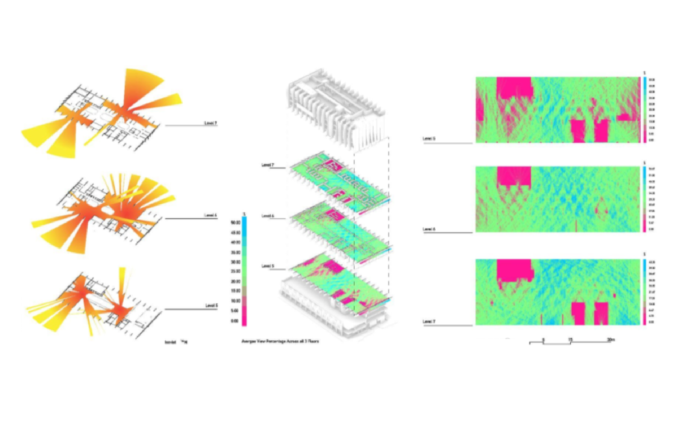
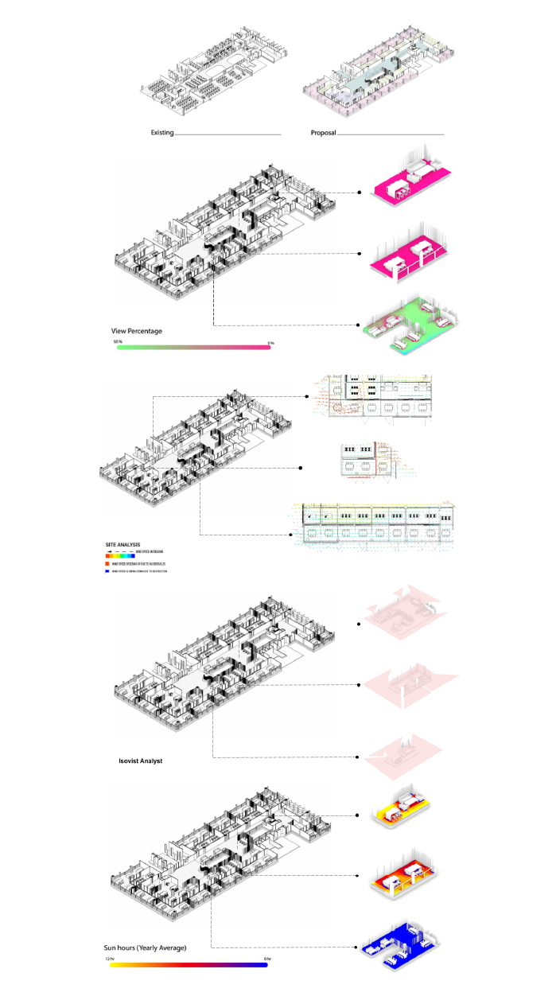

The focus for this project was to use generative computational design techniques, in conjunction with Building information management tools to renovate the current AMDC building at Swinburnes' Hawthorn campus. The dynamic workflow model allowed us to effectively manage time in the group while being able to maximise our work output and quality.
Back to Home





Building Information Management
Building Information Management

The focus for the documentation was to develop a strong understanding of how Revit functions in conjunction with other programs such as Grasshopper and Rhino. Organising and Converting Families between programs and documenting them from construction was one of the key elements in the project.


BDT & Design
Ben Thompson